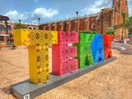

El municipio de Tekax es uno de los 106 municipios que integran el estado mexicano de Yucatán, su cabecera es la ciudad de Tekax, conocida por su arquitectura, cultura, historia y tradiciones. Está ubicado en la zona sur del estado de Yucatán, a 120 kilómetros de la capital del estado.
Toponimia
Tekax, proviene de los vocablos mayas k'áax que significa monte, bosque, lugar agreste y ti'i, allí, lugar.
Luis Ramírez Aznar en su obra Tekax, monografía y apuntes para su historia dice que el origen de la palabra que da nombre a este municipio, se interpreta como "allí donde está el bosque" y que pudo provenir de "la degeneración del nombre maya Ti'ik'áax o sea allá en el monte alto; también puede interpretarse como lugar del monte sacro, tomando como base las costumbres rituales de aquellos tiempos".
Colindancias

El municipio de Tekax marca el límite sur del estado de Yucatán, dándose en su extremo el denominado punto Put, que es la mojonera limítrofe de las tres entidades federativas que integran la península de Yucatán, Yucatán, Campeche y Quintana Roo, punto que ha sido tema de controversias jurídicas a lo largo de la historia en el último siglo, a partir de que se separaron los territorios que antes, hasta mediados del siglo xix, era una sola entidad político administrativa: Yucatán.
Colinda al norte con el municipio de Teabo, al sur con el Estado de Campeche particularmente con el municipio de Hopelchén al sureste con el Estado de Quintana Roo particularmente con el municipio de José María Morelos, al este con los municipios de Tzucacab y Tixméhuac y al oeste con Akil y Oxkutzcab.
Localidades
La cabecera del municipio es Tekax de álvaro Obregón. Además de la cabecera, dentro de la jurisdicción municipal quedan comprendidas las siguientes localidades: Becanchén, Kancab, Kinil, Pencuyut, Ticum, Xaya, Chacmultún, Flor de Pozo, Manuel Cepeda Peraza, Jesús, Candelaria Nohalal, Nueva Santa Cruz, Nuevo Mundo, Canek, San Alonso, San Antonio Knuc, San Diego Buenavista, San Diego Tekax, San Diego I, San Diego II, San Esteban, San Felipe I, San Felipe II, San Francisco, San Gaspar, San Isidro, Mac-Yan, San José, San Juan, San Norberto, Santa Cruz, Santa Rosa, Tixcuytún, Tzakeljaltun, Xkiridz, Xpakan, Kiu Xtoquil, Kantemó, Alfonso Caso, Huntochác y Benito Juárez.
Datos históricos
La región correspondiente al actual municipio de Tekax, se considera ocupada desde la época precolombina cuando inició el desarrollo de la cultura maya en la zona Puuc; así lo atestiguan los sitios arqueológicos de Chacmultún, Canahaltún, Chunmul, Xkichmook, Chacchob y Chunconab, que son ejemplos del estilo Puuc, aunque algunos con influencia de los Chenes de Campeche.
Los xiues, caudillos de la sublevación que desintegró la coalición de Mayapán, bajaron de la sierrita del sur y al fundar el pueblo de Maní erigieron otros pueblos tributarios de este, entre los cuales se encontraban Kax, construido en las faldas de la referida sierrita. Todo el conjunto integraba el cacicazgo de Tutul Xiu con sede principal en Maní.
El Chilam Balam de Chumayel (versión de Antonio Mediz Bolio) en su parte correspondiente a El Libro de los Linajes menciona: "...y fueron a Penkuyut, y fueron a Paxuenel, y llegaron a Xaya, y llegaron a un lugar llamado Tistís, y llegaron a Chicam, y llegaron a Tixmehuac... cuando ya estaban completos los nombres de los pueblos que no lo tenían, etc". No relaciona la ciudad de Tekax, sin embargo, varios de los pueblos mencionados, son plenamente identificables del actual municipio de Tekax.
Hasta 1795 perteneció al Partido de la Sierra Alta.
- 1558: Tekax recibió la visita del Comisario General de la Nueva España apenas terminadas las hostilidades que dieron fin a la guerra de conquista de Yucatán.
- 1809: Se convirtió en cabecera de la sub-delegación de intendencia de Yucatán.
- 1823: Se le concedió el título de Villa.
- 1825: Pasó a ser cabecera del partido de la Sierra Alta.
- 1841: Obtuvo el título de Ciudad.
- 1842: El explorador John Lloyd Stephens, visita la ciudad en su viaje rumbo a Maní
- 1848: Miguel Barbachano toma posesión del gobierno de Yucatán iniciada la guerra de Castas, ante el cabildo de este municipio. En abril la ciudad cae en manos de los rebeldes mayas. Poco tiempo después estos son desalojados por las tropas gubernamentales matando a todos los que no habían podido huir. En este mismo año se presentaron 938 soldados del ejército estadounidense para pelear como mercenarios a sueldo del Gobierno de Yucatán, mediante una paga de 8 dólares mensuales y 320 acres de tierra una vez pacificada la región. Poco después se retiraron tales soldados ante las drásticas condiciones de la lucha y lo inclemente del clima. A lo largo de toda la década, hasta 1858, se repitieron una y otra vez las incursiones de los rebeldes que retuvieron la plaza en varias ocasiones, dándose siempre luchas cruentas que produjeron multitud de bajas de uno y de otro bando.
- 1887: Ricardo Palmerín, apreciado compositor de música vernácula, autor de la música de Peregrina, canción que el caudillo Felipe Carrillo Puerto dedica a Alma Reed, nace en Tekax.
- 1922: Se derogaron los decretos que le concedieron los títulos de Ciudad y Villa y se vuelve a la categoría de Pueblo.
- 1928: Por decreto, el pueblo de Tekax se llamó Ciudad Obregón.
- 1930: Se abrogó el anterior decreto y se le designa con el nombre de Tekax de Álvaro Obregón.
Geografía
El clima es cálido subhúmedo, con lluvias en verano. Tiene una temperatura media anual de 25,7 °C y una precipitación pluvial media de 75,4 mm. La superficie es mayormente plana, interrumpida solo por unos cerros en el sur. Carece de ríos superficiales, pero cuenta con cenotes y aguadas.
Atractivos turísticos
- Arquitectónicos:
- Tiene una atractiva ermita (venera a San Diego) en la parte superior de un montículo hecha de piedra tomada de construcciones mayas.
- Exconvento y parroquia de San Juan Bautista siglo xvii.
- La capilla de San Francisco y la capilla del Padre Eterno.
- Arqueológicos:
- Fiestas populares:
- Del 18 al 22 de abril se festeja la fiesta de la primavera.
- Del 8 de mayo al 1.º de junio, se festeja a San Bartolomé y se hacen rosarios, misas, procesiones y vaquerías en la localidad de Pencuyut.
- Del 8 al 13 de noviembre, se festeja a San Diego de Alcalá.
- Del 8 al 15 de diciembre, se festeja a la Virgen de Guadalupe.
Gastronomía
La mayoría de los alimentos típicos del municipio se preparan con masa de maíz carne de puerco, pollo y venado acompañados con salsas picantes a base de chile habanero y max.
Los principales platillos son: fríjol con puerco, chaya con huevo, puchero de gallina, queso relleno, salbutes, panuchos, pipian de venado, papadzules, longaniza, cochinita pibil, joroches, mucbil pollos, pimes y tamales. Se elaboran dulces como el de yuca con miel, calabaza melada, camote con coco, cocoyol en almíbar, mazapán de pepita de calabaza, melcocha, arepas, tejocotes en almíbar, dulce de ciricote, entre otros.
Las bebidas tradicionales son el xtabentun, balché, bebida de anís, pozole con coco, horchata, atole de maíz nuevo y refrescos de frutas de la región.
Volver a Menú